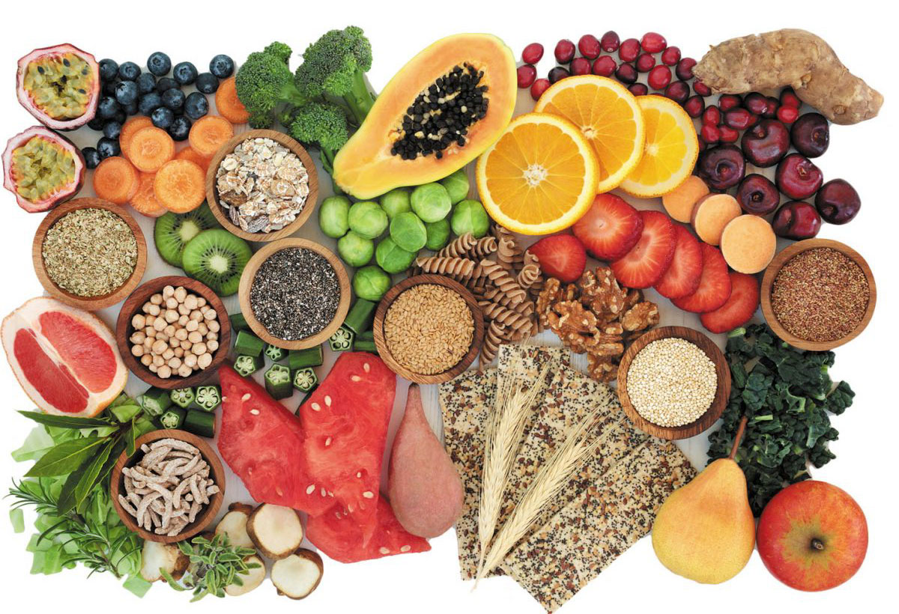

Fibre is defined as a type of carbohydrates that is not totally absorbed by human beings. Fibre in the diet is usually made up of cellulose. It’s a large carbohydrate which can’t be digested by our body because of the lack of enzymes. Fibre can be found in fruits (oranges, currants, pears), vegetables (onion, corn, broccoli, garlic, green bean), pulses (beans, lentils) and whole grains (cereals). Fibre is needed to keep our digestive system healthy and ready to do its job. It also contributes to the processes, like stabilizing cholesterol and glucose levels. The diet which is rich in fibre can prevent coronary heart diseases, bowel cancer, and diabetes.